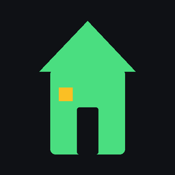

Na jak dlouho
Bučpoly není hra na jeden večer. Svět běží dál, i když zrovna nehrajete, a vaše jmění roste postupně – měsíce, klidně i roky. Stačí se podívat chvilku denně.

Realitní hra na mobil na mapě skutečných Bučovic. Kupujete domy, pronajímáte byty, investujete do firem a vyděláváte i tím, že chodíte po městě. Hraje se dlouhodobě – na měsíce i roky.
Otevřít hru Hra funguje jen na mobilu. Na počítači se nespustí.Na začátku dojdete k volnému domu a dostanete v něm podíl zdarma. U levnějšího domu rovnou získáte přes polovinu a můžete v něm bydlet.
Kupujete domy nebo jejich podíly a byty pronajímáte. Když si u vás někdo bydlí, chodí vám každý den nájem.
Když se opravdu projdete po Bučovicích, hra vám za nachozené metry přidá peníze. Jízda autem se nepočítá.
Můžete chodit do práce a dostávat plat, kupovat podíly ve firmách, brát si půjčky nebo spořit.
Každý den čekají výzvy, místa zájmu ve městě a nečekané události. Co se ve městě děje, píšou městské noviny.
Nájem, úroky, daně, inflace i kolísání cen – všechno hra vysvětluje, takže je to i kus finanční gramotnosti.
Bučpoly není hra na jeden večer. Svět běží dál, i když zrovna nehrajete, a vaše jmění roste postupně – měsíce, klidně i roky. Stačí se podívat chvilku denně.